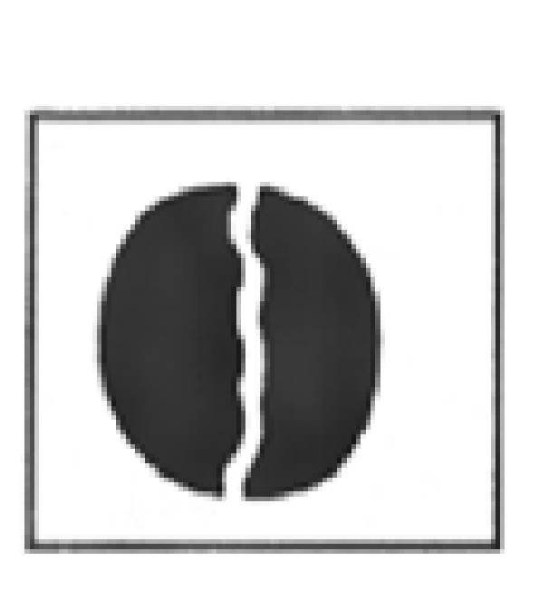
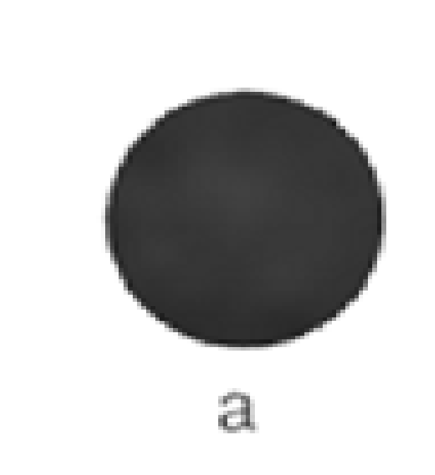
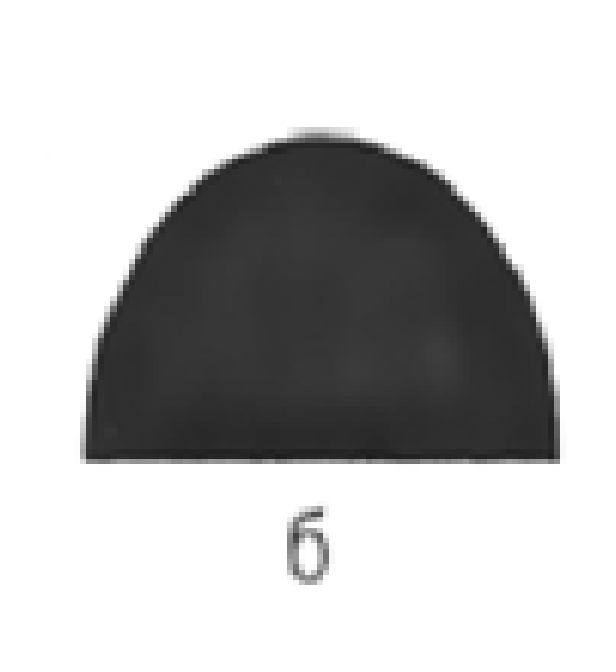
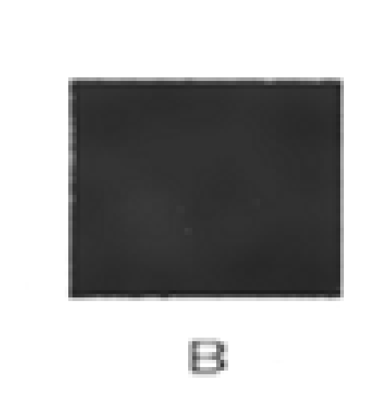
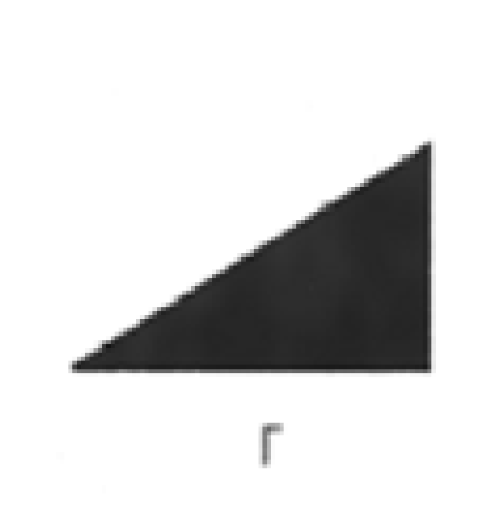
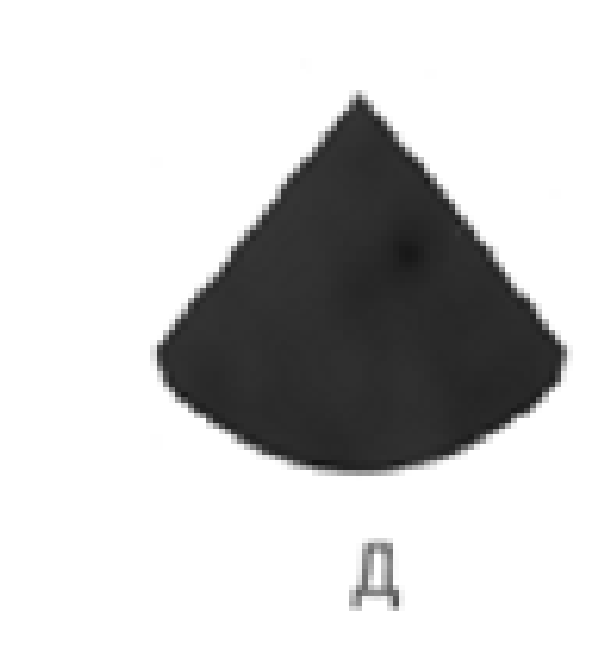

Здравствуйте!
Просим вас принять участие в исследовании, которое изучает взаимосвясь между уровнем притязаний и личностными характеристиками.Вашему вниманию представляется набор заданий для выявления показателя общих способностей. Полученные данные будут использованы исключительно в научных целях в обобщенном виде. Конфиденциальность гарантируется.
Инструкция: Вам предлагается несколько простых заданий. Познакомьтесь с образцами заданий и правильными ответами на них:
Образец 1.
Противоположностью надежды является...
а) грусть; б) злость; в) нежность; г) уныние; д) отчаяние.
Правильный ответ: д.
Образец 2.
Найдите лишнее слово, не подходящее по смыслу к четырем другим из пяти названных.
а) стол; 6) стул; в) голубь; г) диван; д) шкаф.
Правильный ответ: в.
Образец 3.
1. Выберите недостающее во второй паре слово из пяти слов, приводимых ниже.
Лес — дерево; луг—?
а) куст; б) пастбище; в) трава; г) сено; д) тропинка.
Правильный ответ: в.
Образец 4.
Книга стоит 25 монет. Сколько монет стоят 3 книги?
Правильный ответ: 75.
Образец 5.
Продолжите числовой ряд на основании обнаруженной вами особенности этой связи чисел.
2, 4, 6, 8, 10, 12, 14... Правильный ответ: 16.
Образец 6.
Вам предлагается одна фигура, разбитая на несколько частей. Соедините мысленно части, и ту фигуру, которая у вас при этом получится, найдите в ряду фигур а), 6), в), г), д).

    
Правильный ответ: а.